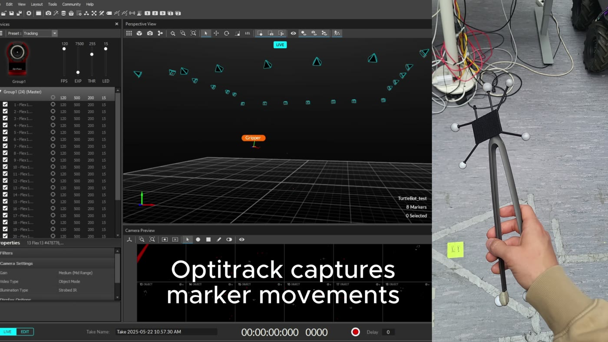
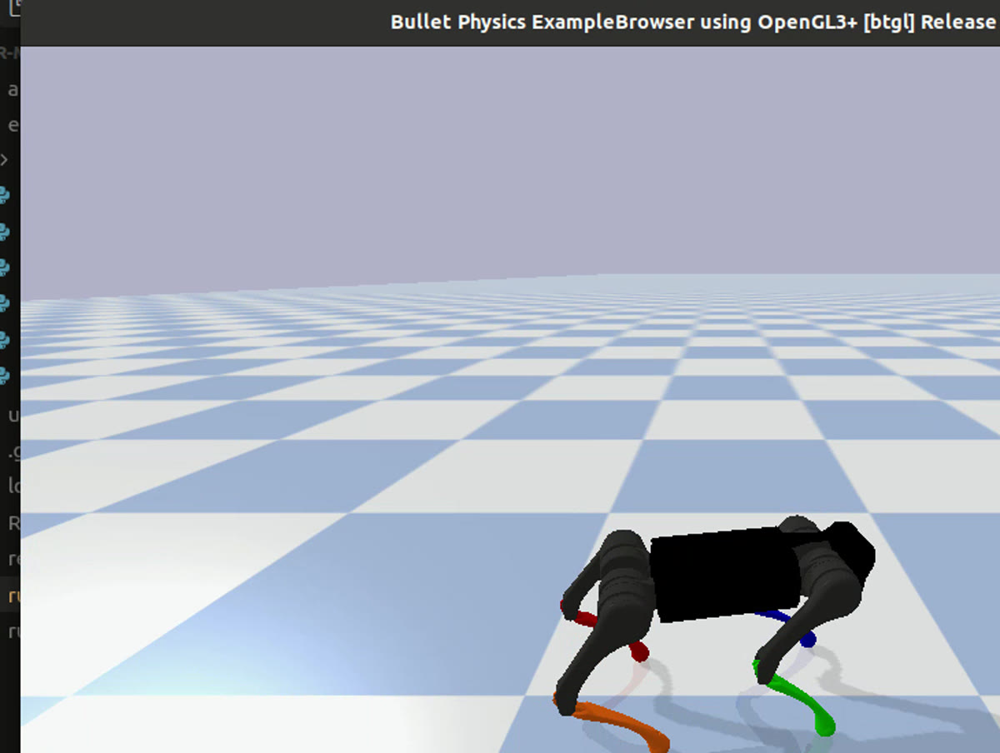

Generalist policy improvement
Post-training a generalist manipulation policy under a hackathon deadline — learning-based robotics built fast, then measured honestly. The work placed 5th among worldwide teams in the Hugging Face × LeRobot hackathon.
03 Projects
From research prototypes to team-built robotic systems, the common thread is hands-on work across modeling, control, learning, simulation — and the integration needed to make a complete system run.
04 Selected systems
Post-training a generalist manipulation policy under a hackathon deadline — learning-based robotics built fast, then measured honestly. The work placed 5th among worldwide teams in the Hugging Face × LeRobot hackathon.
Led a team building a real-to-simulation pipeline in Genesis. The system mirrors live state from a physical Boston Dynamics Spot and maps OptiTrack human-motion data into commands for a simulated Spot — a practical platform for testing and interaction.

Simulation and control for the Achilles-1 wheel-legged RoboMaster robot: state-space modeling, LQR, and virtual model control for smooth ground motion and obstacle traversal, developed in PyBullet and validated on hardware. The team reached the national Top 32, and the work became my bachelor’s thesis.
The interest in legs continued afterwards through quadruped simulation and legged-robotics projects at EPFL.

A manipulator imitating lobster morphology with Bennett joints, built with Prof. Chaoyang Song: a compact end effector that cuts, clips, and pulls in a single tool. The design combined kinematic analysis with iterative generative design in Fusion 360, and won a national 2nd prize at the Mechanical Engineering Innovation and Creativity Competition.
05 Course & side work
A research extension of OptimalModulationDS exploring learned configuration-space distance and gradient information for obstacle-aware manipulation — distance-field training, dynamical-system and MPPI evaluations, and reinforcement-learning ablations for Franka tasks.
Research contextDecentralized planning with local coordinators and optimized hybrid velocity-obstacle methods, evaluated in simulations with up to 12 agents.
Related public fork06 Milestones
Nationally, DJI RoboMaster Robotics Competition with the SUSTech ARTINX Robotics Lab
National, Mechanical Engineering Innovation and Creativity Competition — lychee-picking robot
Worldwide, Hugging Face × LeRobot Hackathon — 5th place
07 Build together
I enjoy projects that require both rigorous reasoning and practical implementation.